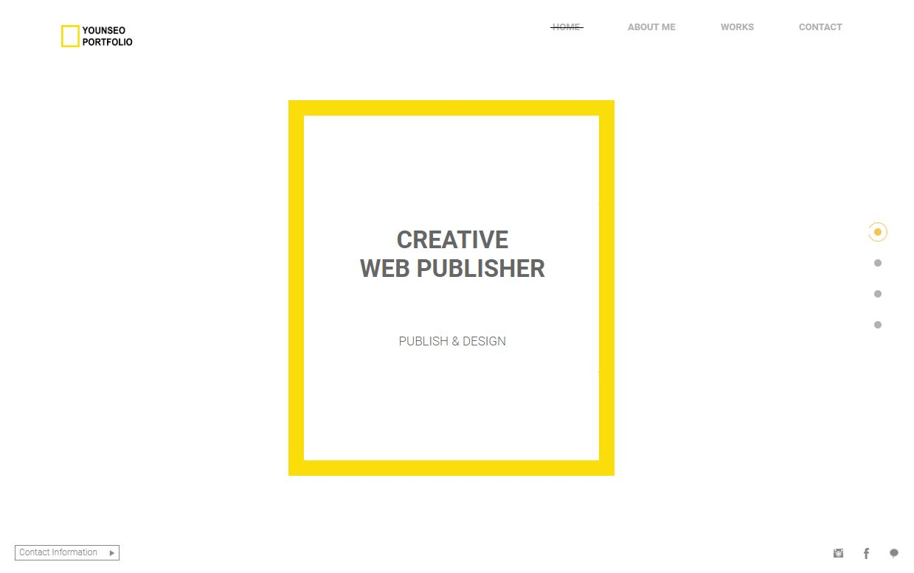

| [신입] 지원자 조윤서 입니다. | |||
|---|---|---|---|
| 지원분야 | 웹디자인/웹퍼블리셔 (신입/경력) | 희망연봉 | 회사 내규에 따름 |
| 이름 | 조 윤 서 | 나이/성별 | 1995.03.10 (만 23세) / 여 | |
|---|---|---|---|---|
| 주소 | 경기도 용인시 처인구 | |||
| 휴대폰 | 010-9248-8941 | 비상연락처 | 부모님 연락처 (관계) | |
| 이메일 | ||||
| 고용촉진지원 | 대상 / 비대상 | |||
| 재학기간 | 학교명 | 전공 | 학점 |
|---|---|---|---|
| 2014.03 ~ 휴학 | 용인 송담 대학교 | 섬유 패션 디자인 학과 | - |
| 2011.03 ~ 2014.02 | 용인 고등학교 | - | - |
| 활동기간 | 상세활동 | |
|---|---|---|
| 2016.02 ~ 2016.05 (4개월) |
구분 | 서비스업 |
| 활동기관 | 에버랜드 | |
| 활동내용 | 세일즈 및 고객응대 | |
| 2016.06 ~ 2016.12 (8개월) |
구분 | 유통업 |
| 활동기관 | 여성의류매장 | |
| 활동내용 | 세일즈 및 고객응대 | |
| 2017.04 ~ 2017.12 (9개월) |
구분 | 사무보조 |
| 활동기관 | 컬쳐웨이 | |
| 활동내용 | 사무업무 | |
| 2018.02 ~ 2018.05 (4개월) |
구분 | 서비스업 |
| 활동기관 | 카페 | |
| 활동내용 | 음료제조 및 고객응대 | |
| 취득일/수상일 | 구분 | 자격증/어학/수상명 | 발행처/발행기관 | 합격/점수 |
|---|---|---|---|---|
| 2018.11.16 | 국가자격증 | GTQ그래픽기술자격 1급 | 한국생산성본부 | 합격 |
| 2018.12.14 | 국가자격증 | 웹디자인기능사 | 한국산업인력공단 | 합격 |
| 2018.12.28 | 국가자격증 | 컴퓨터그래픽스운용기능사 | 한국산업인력공단 | 합격 |
| 보유능력 | 상세내용 |
|---|---|
|  | [포트폴리오 주소] http://younseo.com |
| 활동기간 | 상세활동 | |
|---|---|---|
| 2018.08 ~ 2019.02 (6개월) |
구분 | 디지털디자인[웹디자인/웹퍼블리셔] |
| 활동기관 | 하이미디어 컴퓨터 학원 | |
| 활동내용 |
NCS 전공 교과 1. UI/UX 프로토타입 2. 디자인 구성요소 3. UI/UX 디자인 4. 구현 및 수정보완 5. UI/UX 프로젝트 기획 6. 반응형 웹디자인 7. 실무 프로젝트 8. 프로젝트 결과 |
|
| 보유능력 | 상세내용 |
|---|---|
| Photoshop |
- PC 웹 메인 페이지 시안 제작 - UI/UX 디자인 제작 (아이콘 셋트 제작 및 앱 페이지 시안 제작) - 환경에 따른 최적화된 디자인 제작 및 이미지 보정 편집과 수정 |
| Illustrator |
- Pathfinder, Mesh, Revolve, Blend, Typography, 캐릭터, 로고 - 3D Effect, Graph 기능을 활용하여 디자인 구성요소 제작 |
| HTML 5 |
- 웹 페이지 제작, 문서의 서식정리 - Div 태그 및 시멘틱 태그를 활용하여 HTML5 웹 표준 구조 설계 - 멀티미디어(video, audio, iframe) 제어 |
| CSS 3 |
- 스타일 속성을 이용하여 형태 및 효과 스타일 적용 - animation 속성 및 transition, transform 속성을 활용한 동적 효과 적용 |
| JavaScript |
- 웹 페이지 동적 효과 적용 및 웹 페이지 기능 구현 - 조건문, 반복문, BOM객체, DOM객체 활용 |
| jQuery |
- 웹 페이지 동적 효과 적용, 라이트 박스 플러그인 활용 - DOM객체에 대한 이해 및 활용 - 이미지 슬라이더, 내비게이션, 이미지 스크롤 등 다양한 형태 적용 |
| 자기소개 |
-지원분야와 관련된 적성, 흥미 -업 직종 전환 사유 / 진로 결정계기, 동기 -직업가치관 -생활신조 |
|---|---|
| 직무역량 |
<전공자 신입> -전공 재학시절 성과, 프로젝트, 결과물, 조직력을 어필할 수 있는 교내외 활동/성과 <비전공 신입> -직무 관련 준비 과정, 성과 (교육이수, 자격증, 프로젝트, 팀활동) -유관 아르바이트 단기 경험 |
| 성격의 장단점 |
직무 관련 강점으로 삼을 만한 나의 장점 -조직력을 어필할 수 있는 성격, 커뮤니케이션, 조직력, 친화력, 협응력, 문제해결능력, 리더쉽, 자발성 |
| 입사 후 포부 |
직무에 대한 진지한 태도 - 실무에 가까운 업무 이해 현실적인 업무영역에 대한 능력, 의지 - 조직적응성, 친화력, 인성에 대한 언급, - 기업에 관련된 긍정적인 피드백 - 입사 후 의지에 대해 다시 언급, 강조 |